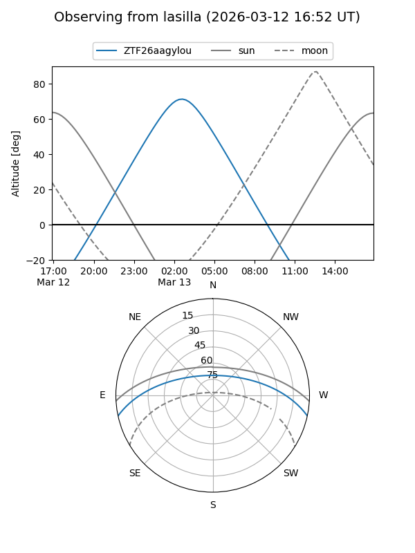
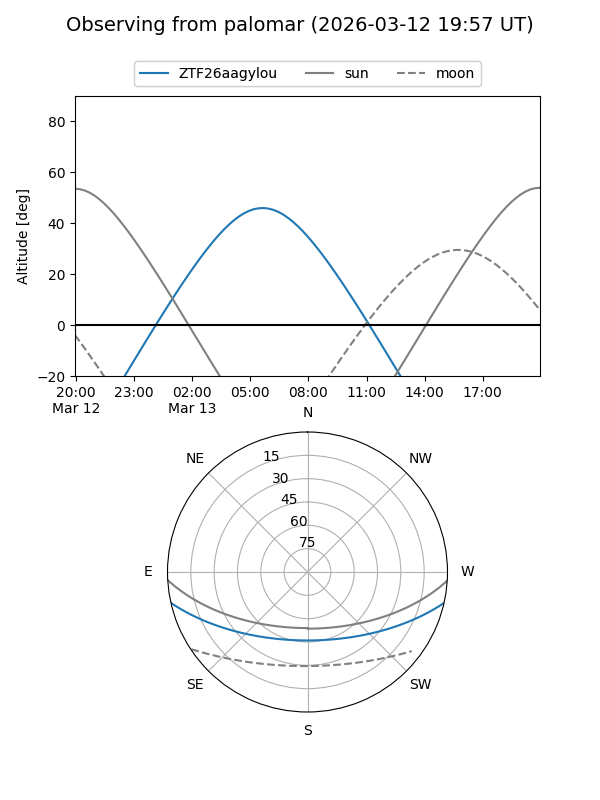

ZTF26aagylou
Target ZTF26aagylou at 2026-03-13 07:50
Aliases and brokers:
FINK: link
Lasair: link
ALeRCE: link
alt names
ZTF26aagylou (ztf,fink_ztf)
Coordinates:
equatorial (ra, dec) = 138.2012,-10.53835
equatorial (HMS+DMS) = 09:12:48.28,-10:32:18.06
galactic (l, b) = (240.6908,+25.00735)
Flags:
Photometry:
last ztfg=18.57
1 ztfg detections
Lightcurve
Visibility


Additional plots